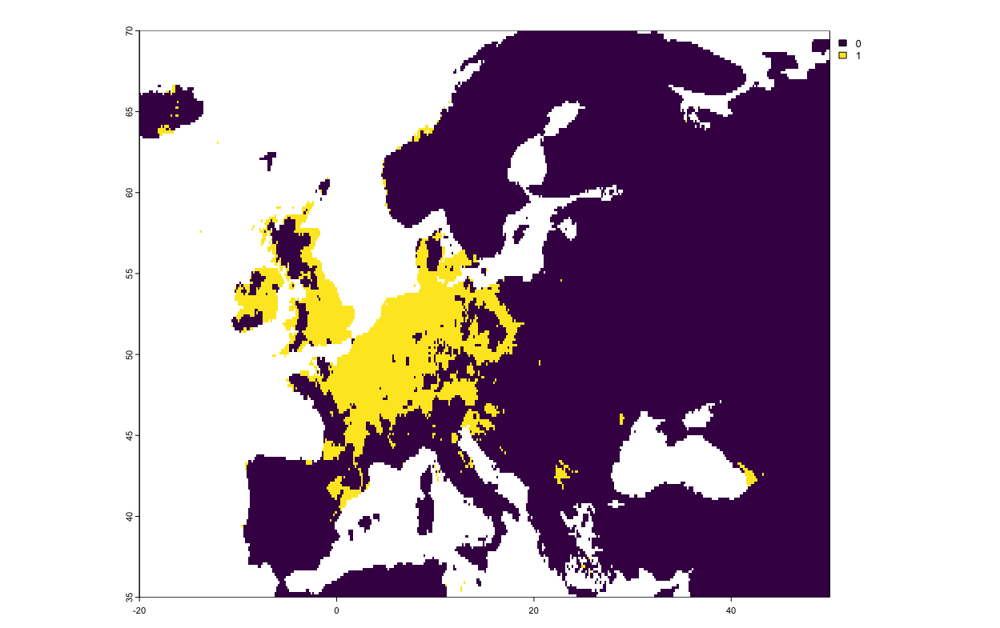
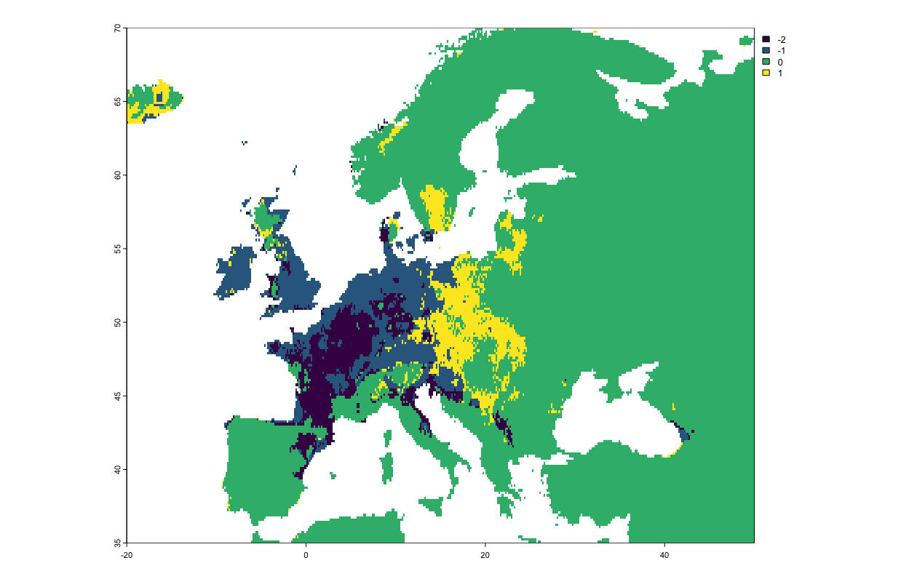

library(tidyverse)
library(biomod2)
library(rnaturalearth)
library(geodata)
library(terra)
#Let's grab the outlines of countries from a database:
world <- ne_countries(scale = "large", returnclass = "sv")
europe_extent <- ext(-20,50,35,70) #Rough coordinates for
europe_shapefile <- crop(world, europe_extent)
#Current bioclim variables
europe_bioclim <- worldclim_global(res = "10", var = "bio", path = ".")
europe_bioclim <- terra::crop(europe_bioclim, europe_extent)
#Load in the bioclim projections from SSP 585:
europe_bioclim_future <- cmip6_world(model = "ACCESS-CM2", ssp ="585", time = "2061-2080", var = "bioc", res = "10", path = ".")
europe_bioclim_future <- terra::crop(europe_bioclim_future, europe_bioclim)Getting Started Code
Getting Started
This walkthrough is based on the first vignette for biomod2.
We’ll start by loading the libraries to carry out the work. Alongside biomod2, we’ll use several libraries to help us load the data:
- geodata, which provides functions to download GBIF and environmental data dynamically.
- tidyverse, which helps with general data-handling.
- terra, which has functions for manipulating raster files.
We then proceed to load data from GBIF for the common pipistrelle bat (Pipistrellus pipistrellus). There are currently 3,131,556 records of the pipistrelle bat in GBIF, but we’re only going to work with a subset of 100,000.
genus_name <- "Pipistrellus"
species_name <- "pipistrellus"
full_name <- paste(genus_name, species_name, sep = " ")
europe_occurrences <- sp_occurrence(genus_name, species_name, ext = europe_extent, down = T, removeZeros = T, fixnames = T, end = 10000)
#Separate out these records by longitude and latitude:
long_lats <- data.frame(cbind(europe_occurrences$lon, europe_occurrences$lat))
names(long_lats) <- c("long","lat")
#We're working with opportunistic sampling, so all our observations are positive. This means that we have to add in assumed-absences (pseudoabsences) amongst the axes of our regions. We've set there to be as many pseudoabsences as there are recorded positives.
train_data <- data.frame(full_name = rep(1,nrow(long_lats)))
pipistrellus_data <- BIOMOD_FormatingData(resp.var = train_data,
expl.var = europe_bioclim,
resp.xy = long_lats,
resp.name = full_name,
PA.nb.rep = 5,
PA.nb.absences = nrow(long_lats),
PA.strategy = 'random',
filter.raster = T)
pipistrellus_model <- BIOMOD_Modeling(bm.format = pipistrellus_data,
modeling.id = 'GAM',
models = "GAM",
CV.strategy = 'kfold',
CV.k = 5,
CV.nb.rep = 3,
#CV.perc = 0.8,
OPT.strategy = 'default',
var.import = 3,
metric.eval = c('TSS','ROC'))
all_data_models <- get_built_models(pipistrellus_model, PA = "allData")
bm_PlotResponseCurves(pipistrellus_model, models = all_data_models)
names(europe_bioclim_future) <- names(europe_bioclim)
pipistrellus_current <- BIOMOD_Projection(bm.mod = pipistrellus_model,
proj.name = 'Current',
new.env = europe_bioclim,
models.chosen = 'all',
metric.binary = 'all',
metric.filter = 'all',
build.clamping.mask = TRUE)
pipistrellus_future <- BIOMOD_Projection(bm.mod = pipistrellus_model,
proj.name = 'Future',
new.env = europe_bioclim_future,
models.chosen = 'all',
metric.binary = 'TSS',
build.clamping.mask = TRUE)
current_projections <- get_predictions(pipistrellus_current, metric.binary = "TSS")
future_projections <- get_predictions(pipistrellus_future, metric.binary = "TSS")
pipistrelle_rangesize_change <- BIOMOD_RangeSize(proj.current = current_projections,
proj.future = future_projections)plot(current_projections$Pipistrellus.pipistrellus_allData_allRun_GAM)
plot(pipistrelle_rangesize_change$Diff.By.Pixel[[4]])
